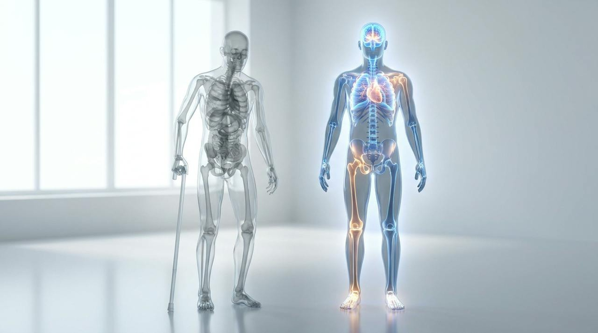

Layer three: movement
Same age.
One of them moves. The other doesn’t.
Brain
Weights, balance
Heart, lungs
VO2 max, Zone 2
Muscles, bones
Weights
Feet
Balance
12.4
years in poor health at the end of an American life, the widest gap in the world
Mayo Clinic, 183 countries, 2024
14 / 21